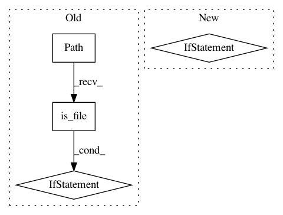

00de689e6624b4b3c312c921226ad23f49a79229,deeppavlov/core/models/keras_model.py,KerasModel,load,#KerasModel#Any#Any#Any#Any#Any#Any#Any#Any#Any#Any#Any#,121
Before Change
"\nModel weights file is %s.h5"
"\nNetwork parameters are from %s_opt.json" % (self._model_file, self._model_file))
opt_path = Path(str(self.model_path) + "_opt.json")
weights_path = str(self.model_path) + ".h5"
if opt_path.is_file():
self.opt = read_json(opt_path)
else:
raise ConfigError(
"Error: config file %s_opt.json of saved model does not exist" % self._model_file)
model_func = getattr(self, model_name, None)
if callable(model_func):
model = model_func(params=self.opt)
else:
After Change
opt_path = "{}_opt.json".format(self.model_path)
weights_path = "{}.h5".format(self.model_path)
if Path(opt_path).exists() and Path(weights_path).exists():
self.opt = read_json(opt_path)
model_func = getattr(self, model_name, None)
if callable(model_func):
model = model_func(params=self.opt)
else:
raise AttributeError("Model {} is not defined".format(model_name))
print("Loading weights from `{}{}`".format(self._model_file, ".h5"))
model.load_weights(weights_path)
optimizer_func = getattr(keras.optimizers, optimizer_name, None)
if callable(optimizer_func):
optimizer_ = optimizer_func(lr=lr, decay=decay)
else:
raise AttributeError("Optimizer {} is not callable".format(optimizer_name))
loss_func = getattr(keras.losses, loss_name, None)
if callable(loss_func):
loss = loss_func
else:
raise AttributeError("Loss {} is not defined".format(loss_name))
metrics_names = metrics_names.split(" ")
metrics_funcs = []
for i in range(len(metrics_names)):
metrics_func = getattr(keras.metrics, metrics_names[i], None)
if callable(metrics_func):
metrics_funcs.append(metrics_func)
else:
metrics_func = getattr(add_metrics_file, metrics_names[i], None)
if callable(metrics_func):
metrics_funcs.append(metrics_func)
else:
raise AttributeError("Metric {} is not defined".format(metrics_names[i]))
model.compile(optimizer=optimizer_,
loss=loss,
metrics=metrics_funcs,
loss_weights=loss_weights,
sample_weight_mode=sample_weight_mode,
weighted_metrics=weighted_metrics,
target_tensors=target_tensors)
return model
else:
self.init_model_from_scratch(model_name, optimizer_name,
lr, decay, loss_name)
@abstractmethod
def train_on_batch(self, batch):
Method trains the model on a single batch of data
In pattern: SUPERPATTERN
Frequency: 3
Non-data size: 4
Instances
Project Name: deepmipt/DeepPavlov
Commit Name: 00de689e6624b4b3c312c921226ad23f49a79229
Time: 2018-01-19
Author: ol.gure@gmail.com
File Name: deeppavlov/core/models/keras_model.py
Class Name: KerasModel
Method Name: load
Project Name: catalyst-cooperative/pudl
Commit Name: ebd339fe6f290551bf9424a06ee8c44c43b6d69c
Time: 2020-08-21
Author: mailbox@pablovirgo.com
File Name: src/pudl/extract/ferc714.py
Class Name:
Method Name: get_ferc714
Project Name: mindsdb/mindsdb
Commit Name: 7f7b6bd06af809600dd94a56ad45f355c09fd434
Time: 2018-10-18
Author: jorge.torres.maldonado@gmail.com
File Name: mindsdb/libs/helpers/multi_data_source.py
Class Name:
Method Name: getDS